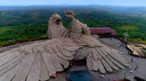

Kollam

Kollam, known by its former name Quilon and Desinganadu , is an old seaport and city on the laccadive sea coast of the Indian state of kerala . It is located 66 kms north of the state capital Trivandrum . The city is on the bank of Ashtamudi lake.Kollam is one of the least polluted cities in India. It is known for cashew processing and coir manufacturing .Ashtamudi lake is considered the southern gateway to the backwaters of kerala and is a prominent tourist destination in kollam.
Tourist Places to Visit

Jatayupara

Ashtamudi lake